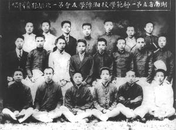
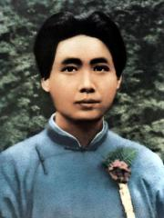
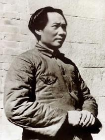

大事年表
1893-1910年
1893年
12月26日，诞生在湖南省湘潭县韶山冲一个农民家庭。
1902年－1909年
在家乡韶山六所私塾读书，接受中国传统的启蒙教育。
1910年
秋季，考入湖南湘乡县立东山高等小学堂读书。此期间受康有为、梁启超改良主义思想的影响。
1911-1920年
1911年
春季，到长沙，考入湘乡驻省中学读书。期间，读到同盟会办的《民立报》，受其影响，撰文表示拥护孙中山及同盟会的纲领。
10月，响应辛亥革命，投笔从戎，在湖南新军当列兵。半年后退出。
1913年
春季，入湖南省立第四师范学校预科读书。
1914年
秋季，编入湖南省立第一师范学校本科第八班。在校期间，受杨昌济等进步教师的影响，成为《新青年》杂志的热心读者，崇拜陈独秀、胡适。
1918年
4月14日，同萧子升、何叔衡、蔡和森等发起成立新民学会。
6月，在湖南省立第一师范学校毕业。
8月，为组织湖南赴法勤工俭学 运动第一次到北京。在北京期间，担任北京大学图书馆管理员，得到李大钊等人帮助，开始接受俄国十月革命的思想影响。
1919年
4月6日，从上海回到长沙。
5月，响应五四运动，发起成立湖南学生联合会，领导湖南学生反帝爱国运动。
7月14日，主编的湖南学生联合会会刊《湘江评论》在长沙创刊。7月至8月，连续撰写并发表《民众的大联合》长文。
10月5日，母亲文氏病逝，闻迅从长沙赶回韶山。8日，在母亲灵前写成《祭母文》。
12月，为领导驱逐湖南军阀张敬尧的运动，第二次到北京。在京期间，读到《共产党宣言》等马克思主义书籍。
1920年
5、6月间，在上海会见陈独秀，同他讨论读过的马克思主义书籍等问题。
8月初，同易礼容等在长沙发起成立文化书社，传播马克思主义和新文化。
8月至9月，参加筹备成立俄罗斯研究会。
11月25日，致信罗章龙，提出新民学会，“要变为主义的结合才好。主义譬如一面旗子，旗子立起了，大家才有所指望，才知所趋赴”。
11月，同何叔衡等组织长沙共产主义小组。
12月1日，致信给蔡和森、萧子升和其他在法会友。信中表明自己接受马克思主义，走俄国十月革命的道路。在长沙筹建社会主义青年团。同杨开慧结婚。
1921-1930年
1921年
1月1日至3日，同何叔衡、彭璜、周世钊、熊瑾玎等十余人在长沙潮宗街文化书社召开新民学会会员新年大会。在会上提出新民学会应以“改造中国与世界”为共同目的，赞成用“俄式”方法改造中国。
7月23日至8月初，同何叔衡作为长沙共产主义小组的代表出席在上海召开的中国共产党第一次全国代表大会。
8月，回长沙，任中国劳动组合书记部湖南分部主任。与何叔衡创办湖南自修大学。
10月10日，建立中共湖南支部，任书记。
1922年
5月，中共湘区执行委员会成立，任书记。
9月至12月，组织领导粤汉铁路工人、安源路矿工人、长沙泥木工人等一系列罢工运动，推动湖南工人运动迅速走向高潮。
1923年
4月，离开长沙到达上海，在中共中央工作。
6月，在广州出席中国共产党第三次全国代表大会，被选为中央执行委员、中央局委员、并担任中央局秘书。
9月16日，遵照中共中央的决定并受国民党本部总务部副部长林伯渠的委托，回到长沙，筹建湖南国民党组织。
1924年
1月，在广州出席中国国民党第一次全国代表大会，被选为候补中央执行委员。
2月，到上海，任国民党上海执行部委员、组织部秘书等职。
12月，回湖南养病。
1925年
2月，回到韶山，一面养病，一面开展农民 运动。
9月，到广州，参加国民党第二次全国代表大会筹备工作。
10月，任国民党中央宣传部代理部长。
12月1日，发表《中国社会各阶级的分析》一文。
12月5日，主编的国民党中央宣传部刊物《政治周报》创刊。
1926年
1月，出席中国国民党第二次全国代表大会，继续当选候补中央执行委员。
3月18日，在广州国民党政治讲习班纪念巴黎公社五十五周年集会上发表讲演，题为《纪念巴黎公社的重要意义》。
3月，蒋介石在广州制造中山舰事件，同周恩来等力主反击。
5月至9月，主办国民党第六届农民 运动讲习所，任所长。
11月，到上海任中共中央农民 运动委员会书记。不久到武汉，创办国民党中央农民 运动讲习所。
12月，在长沙出席湖南全省第一次工人代表大会和第一次农民代表大会。

1927年
1月4日至2月5日，在湖南考察湘潭、湘乡、衡山、醴陵、长沙五县农民 运动。
3月，发表《湖南农民 运动考察报告》；在武汉出席国民党二届三中全会。
4月12日，蒋介石在上海发动反革命政变。
4月27日至5月10日，出席中国共产党第五次全国代表大会，被选为候补中央执行委员。会议批评了陈独秀的右倾错误。
7月15日，汪精卫在武汉发动反革命政变，宁汉合流，大革命失败。
8月1日，南昌起义爆发。同宋庆龄等二十二名国民党中央委员联名发表《中央委员宣言》，谴责蒋介石、汪精卫背叛国民革命。
8月7日，出席中共中央在汉口召开的紧急会议，提出枪杆子里面出政权的思想，被选为临时中央政治局候补委员。会后到湖南领导湘赣边界秋收起义。

9月9日，湘赣边界秋收起义爆发。在去江西铜鼓萧家祠第三团团部途经浏阳张家坊时，被团防局的清乡队抓住，押送途中机智脱险。
9月，秋收起义受挫后，率起义部队向罗霄山脉中段进军。
10月，到达江西宁冈县茅坪，开始创建井冈山革命根据地。
11月，遭到中共临时中央政治局错误指责，被撤销政治局候补委员职务。
1928年
4月，率部在江西宁冈县砻市同朱德、陈毅率领的南昌起义军余部和湘南起义农军会师。
5月，担任两支部队合编成的工农革命军（后改称中国红军）第四军党代表、军委书记。
7月，在中国共产党第六次全国代表大会上被选为中央委员。
10月，为中共湘赣边界第二次代表大会起草决议案，提出“工农武装割据”的思想。
11月25日，代表中共红四军前委给中央写报告，总结井冈山工农武装割据的经验。
12月，主持制定井冈山《土地法》。
1929年
1月，同朱德、陈毅率红四军主力向赣南、闽西进军，至1930年春赣南、闽西两块革命根据地初步形成。
4月，主持制定兴国《土地法》。
6月，出席在龙岩召开的中共红四军第七次代表大会，关于红军的任务、政治工作和军事工作等问题的正确意见未被接受，原由中共中央指定他担任的前委书记职务被改选他人担任。会后，离开红四军主要领导岗位，到闽西休养并指导地方工作。
 7月，指导召开中共闽西第一次代表大会。9月，中共中央给红四军前委发出指示信，肯定了毛泽东关于红军的行动策略和建设一支坚强的人民革命军队的正确主张。
12月，在福建上杭县古田村主持召开中共红四军第九次代表大会，在会上作政治报告，并起草大会决议案（即古田会议决议）。
1930年
1月，写《星星之火，可以燎原》一文，阐述关于农村包围城市、武装夺取政权的中国革命道路的理论。
5月，在江西寻乌作调查；同时撰写《反对本本主义》一文，提出“没有调查，没有发言权”。
8月，任红一方面军总政治委员和中共总前敌委员会书记。
9月，在中共六届三中全会上被选为政治局候补委员。
12月30日至次年1月3日，同朱德等指挥红一方面军粉碎国民党军第一次“围剿”。